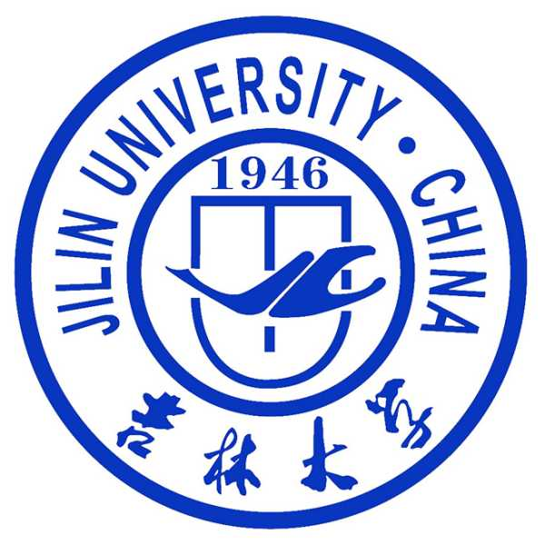
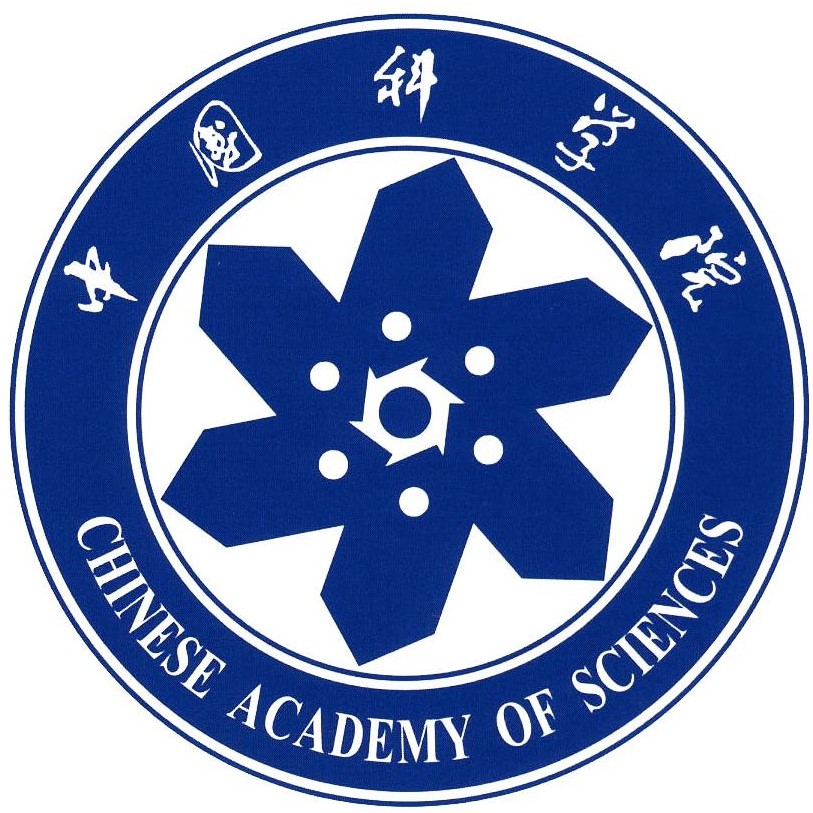
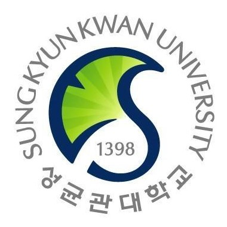
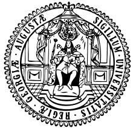

Qunshan He (何群山)

|
|
Biography
I am now a fourth-year B.Eng. student from Department of Engineering, Jilin University.
My Comprehensive Academic Record is GPA4.0/4.0, ranking 1/334.
During my B.Eng. journey, I joined JRobot Laboratory and participated in RoboMaster Robotics Competition
as the group head of Robotic Vision since 2019, supervised by Yubo Xuan.
I also took charge of a College Student Innovation Training Project,
served as a Research Intern in Key Laboratory of Applied Optics of CIOMP since 2020, supervised by Dayu Li.
Currently, my research interests include
Robotics Visual Perception
Computational Imaging
Eduacation
|  |
Jilin UniversityChangchun, China B.Eng. in Communication EngineeringAug 2018 - Present Group Head of Robotic Vision for RoboMaster Robotic Competition in JRobot Laboratory, supervised by Yubo Xuan. Jan. 2019 - Present |
Project Experience

|
In the RoboMaster Robotics Competition, participants need to control their robots to attack enemy’s robots by launching projectiles.
And the only effective attacks are made by striking the Armor module, which is highly characterized by two bright light-bars (red or blue).
We come up with a machine vision method to recognize enemy’s armor and aim at the targeted one to realize robot automatic attack. |

|
Standard microscope is limited by the Numerical Aperture (NA) of physical lenses,
if we want to see a feature with a higher resolution, we must switch to a different microscope objective, with a reduced field of view. |
Professional Experiences
|
Massachusetts Institute of TechnologyMassachusetts, United States Winter Camp Participatant of Deep Learning for Autonomous Driving Course(Online) with A level certificate in CSAIL. Feb 2021 - Mar 2021 |
|
|  |
University of Chinese Academy of ScienceChangchun, China Research Intern at State Key Laboratory of Applied Optics, CIOMP, developing Computational Imaging Microscope, supervised by Dayu Li. Oct 2020 - Present |
|  |
Sungkyunkwan UniversitySeoul, South Korea Academic Visitor at the Robotics Innovatory Laboratory, delivering presentation "Robots Enriching my Youth" Nov. 3 2019 |
|
IEEE International Conference on Computer VisionSeoul, South Korea ICCV2019 Student Participants and group member of JLU-Thunder for Large-Scale Video Object Segmentation Challenge. Oct. 27 - Nov. 2 2019 |
|
|  |
University of GoettingenGoettingen, Germany Visiting Student at the Computer Networks Group, supervised by Prof. Xiaoming Fu (member of Academia Europaea). Jul. 2016 - Sep. 2016 |
Selected Awards
- First Prize of RoboMaster 2020 Robotics Competition2020
- Open Source Award of RoboMaster 2020 Robotics Competition2020
- Gold Award of the 7th Jilin Province "Internet+" Innovation and Entrepreneurship Competition2021
- Honorable Mention of Interdisciplinary Contest in Modeling (MCM) 2021
- First Prize of Jilin Province in Contemporary Undergraduate Mathematical Contest in Modeling(CUMCM) 2020
- First Prize Scholarship, Jilin University 2019 & 2020
- Outstanding Acadamic Scholarship, Jilin Univeristy 2020
- Outstanding Student, Jilin University 2019 & 2020